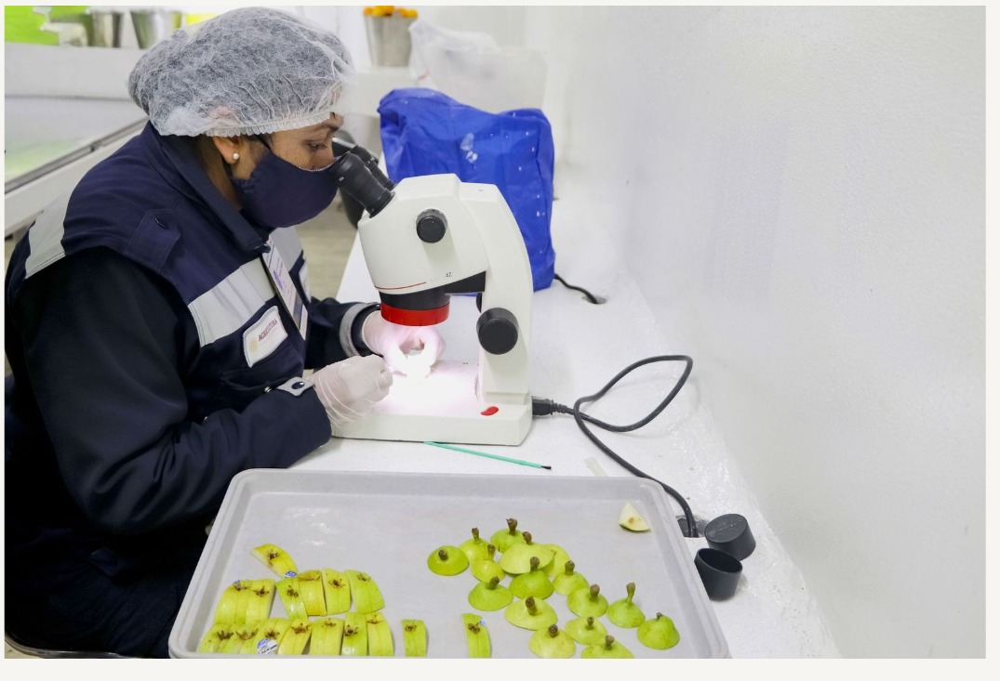

Minimizamos riesgos de ingreso de plagas y enfermedades
En 2023, Senasica rechazó la entrada a territorio nacional de casi mil 500 embarques comerciales
Con el objetivo de disminuir el riesgo de introducción a México de miles de plagas y enfermedades vegetales y animales, las cuales podrían poner en riesgo la producción y abasto de alimentos, el Senasica cuenta con un ejército de oficiales de inspección, quienes vigilan los embarques comerciales y en caso de alguna detección, tienen la facultad de destruir la mercancía o regresarla a su país de origen.
Leer artículo